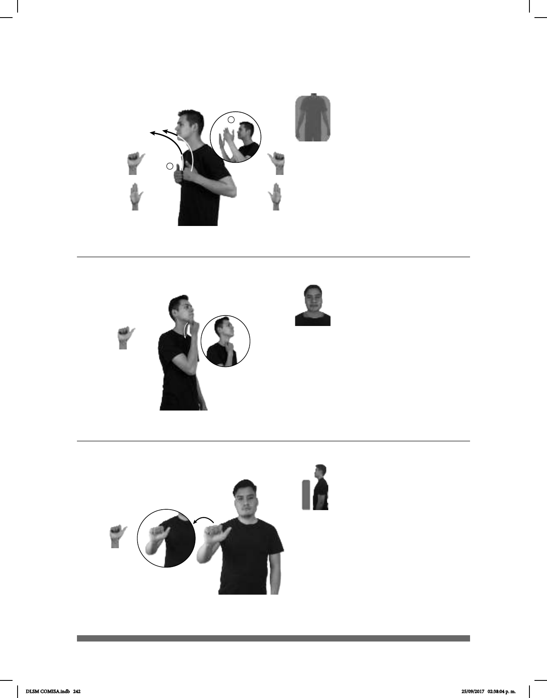

242
1
2
(A-28)
1
/
Alabar
2
DIARIO ALABANZA DIOS, pro-NOSOTROS HACER
Todos los días hacemos alabanzas a Dios.
(A-29) Alcohol
(A-30)
_____________neg
ALCOHOL pro-YO NO-GUSTAR
A mí no me gusta el alcohol.
DIARIO pos-MI VECINO IR ALCOHÓLICOS-ANÓNIMOS
Mi vecino va diario a Alcohólicos Anónimos.
Seña: SC: I. y II. SS
I. A.1; II. B-P.2
I. y II. Palmas hacia adentro.
I. Sobre el pecho; II. Del cuello
al rostro.
I. Recto hacia arriba; II. Las
manos se mueven formando un arco hacia
arriba y hacia enfrente.
Mirada hacia arriba.
1. sust. f. Veneración y
celebración con oraciones. 2. Expresar con
palabras admiración por las cualidades o los
méritos de algo o de alguien.
La seña se usa en la
comunidad sorda católica.
Seña: SM
A.1
Palma hacia adentro.
Inicia sobre la barbilla y
termina a la altura de los hombros.
Recto.
sust. m. Líquido incoloro,
calentado y de disolver un gran
la destilación de sustancias vegetales
como la caña, la remolacha o la uva, o
sintéticamente. Se una en la fabricación
de antisépticos como conservador y
como disolvente.
Seña: SM
A.1
Palma hacia afuera.
A la altura del pecho.
La mano simula un
salto de izquierda a derecha.
Comunidad de carácter
internacional dedicada a ayudar a
combatir el alcoholismo.
DLSM COMISA.indb 242 25/09/2017 02:38:04 p. m.